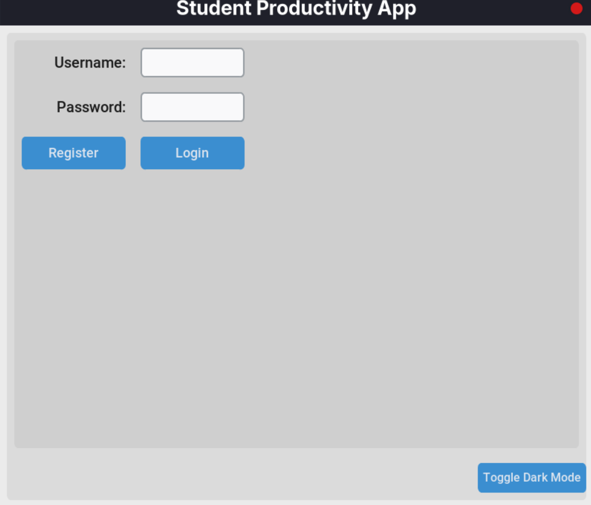
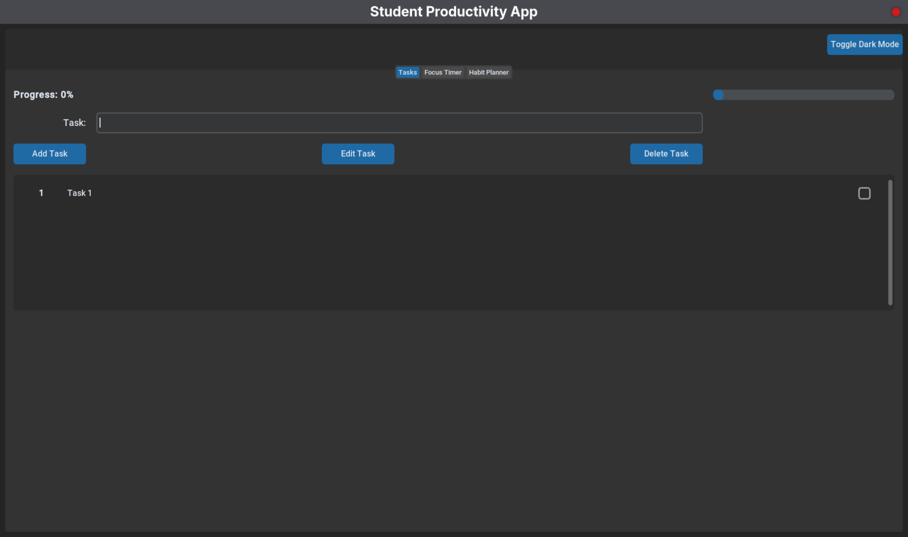

üìö StudentSync ‚Äì Your All-in-One Student Productivity App
StudentSync is a minimal yet powerful desktop productivity application designed specifically for students who want to take control of their time and habits. Whether you're managing assignments, staying on top of your study goals, or building better daily routines — StudentSync helps you stay focused and consistent.
üéØ Core Features
- ⏱️ Pomodoro Timer: Boost focus and avoid burnout with the classic 25/5 productivity method.
- üìù Task Manager: Organize tasks by priority and keep your to-dos in check.
- üìà Habit Tracker: Build long-term positive habits with a visual progress log.
- üîê Secure Signup & Login: User accounts are protected by a secure login system with password hashing.
üîß Tech Stack
- Frontend:
CustomTkinterfor a native desktop feel with a beautiful aesthetically pleasing UI. - Backend:
Javafor the data storage a file encryption. - Language: Entirely built using Python and Java.
üöÄ Why StudentSync?
Unlike bloated productivity apps, StudentSync is lightweight, distraction-free, and purpose-built for students. It runs entirely offline, respects your privacy, and keeps your data local — giving you full control over your study routine.
Installation
To install StudentSync, the following are the pre-requisites.
- Python >= 3.11
- Java OpenJDK 24 and above.
makejustcommand runner (optional)
Steps to Install
- Clone the repository either from codeberg.org or GitHub as follows
#From Github
git clone https://github.com/Vaishnav-Sabari-Girish/StudentSync.git
#From codeberg.org
git clone https://codeberg.org/Vaishnav-Sabari-Girish/Student-Productivity-App.git
cdinto the clone repo.- Run the following commands
# If you use make
make build
make run
#If you use just
just build
just run
How to use the App
The app has the following features
Once you run the command just run or make run, you are greeted with the following window.

By default the app is in light mode. To change it to dark mode, click on the Toggle Dark Mode Button below.
Now, enter you Username and Password and click on Register if you are using the app for the first time. If you have used the app earlier, enter your correct details and click on Login.
After you have registered yourself, click on Login to login to the app.
Once you have logged in, you are greeted with this window.
Task related Operations
Adding a Task
Here, you can add your task on the input field and press Add Task Button to see the task.
Here's how it'll look after you add a task.

Tracking Task progress
You can also track the status of those tasks (Completed or Pending), by checking the bok on the rightside next to the name of the task.
Here's what it looks like.
Editing a Task
To edit a task, select the task you want to edit and click on Edit Task. You will see a window pop up with an input field for the new Task name. The process is outlined in the below video.
Deleting a Task
Then to delete a task, we will select the task and them click on Delete Task. The task will then be deleted as shown in the below video.
The Pomodoro Timer
The StudentSync app also has an integrated Pomodoro Timer, which helps the students study for a certain time (25 minutes) and take a break (5 minutes). After 2 study sessions, there is a long break of 15 minutes.
This system makes sure that the student isn't overwhelmed due to studies.
To access the Pomodoro Timer, click on the Focus Timer tab.
Here is the video of Pomodoro.
Habit Tracker
This is similar to Task Manager in the app. Here, you can add your routines and for how much time, you will perform your routines.
Same as task, you can
- Add New Routine
- Edit Routine
- Tracking the Routine progress
- [Delete Routine]
Adding new Routine
To add a new Routine, first go to the Habit Planner tab.
Then enter your habit, with the time you will spend on that habit and click on Add new Habit
Editing a Routine
To edit a routine, select the routine you want to edit and the click on Edit Routine, you will now have to enter the new routine name and new time.
Tracking the Routine progress
Tracking the routine progress is the same as that of the task.
Check the box on the far right of the habit you want to change the progress of.
Here's the video